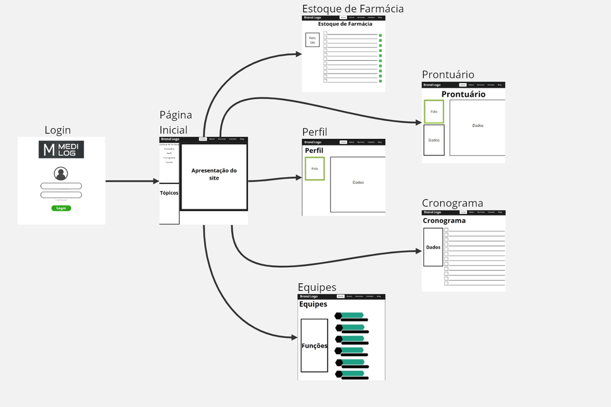
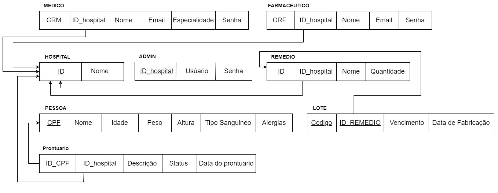
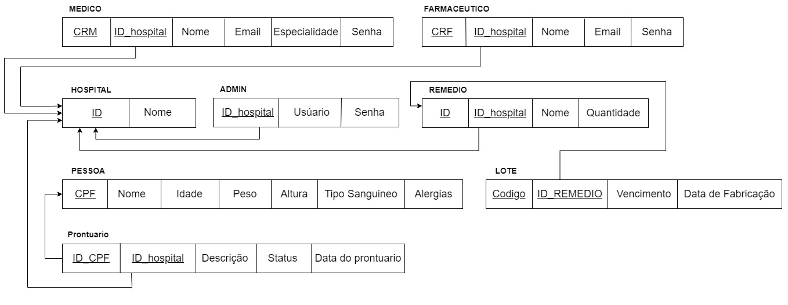
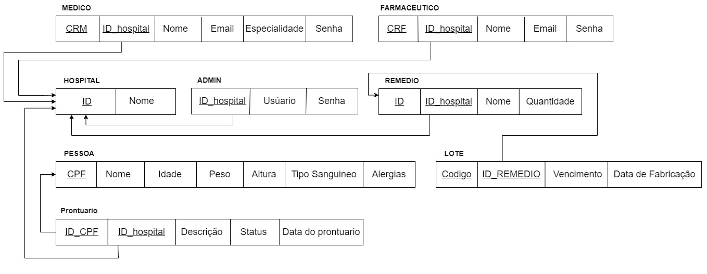

Introdução
Informações Gerais
- Nome do Projeto: Medilog
- Repositório GitHub: Repositorio Medilog
- Membros da equipe:
Contexto
Problema
no Brasil erros humanos na area da saude principalmente em hospitais, anualmente geram mais de um milhão de efeitos colaterais por ano.
Objetivos
temos como objetivo implementar um sistema unificado para hospitais privados para agilizar o atendimento e facilitar a consulta de dados referentes a pacientes e medicamentos do hospital.
Justificativa
No brasil ainda não existe um sistema que atenda tal necessidade para hospitais, com exceção da rede publica q possui o sus, então buscamos implementar uma nova solução para reduzir os erros humanos.
Público-alvo
Redes hospitalares de iniciativa privada.
Concepção
Especificações do Projeto
Requisitos
As tabelas a seguir apresentam os Requisitos Funcionais, Requisitos Não Funcionais e Regras de Negocio, que detalham o escopo do projeto.
Requisitos Funcionais
| ID | Descrição do Requisito | Dependencias |
|---|---|---|
| RF-01 | Pagina e sistema de Login | ... |
| RF-02 | Pagina Principal (para cada função) | ... |
| RF-03 | CRUD para administração dos pacientes | RF-02 |
| RF-04 | CRUD para administração dos funcionarios | RF-02 |
| RF-05 | CRUD para controle dos medicamentos | RF-02 |
| RF-06 | Pagina de listagem dos pacientes e suas informações | RF-02 RF-03 |
| RF-07 | Pagina para listagem dos remedios presentes na farmacia e suas informações | RF-02 RF-05 |
| RF-08 | Sistema de busca de medicamentos no sistema por fotos utilizando IA | RF-02 RF-05 |
Requisitos Não-Funcionais
| ID | Descrição do Requisito |
|---|---|
| RNF-01 | software codificado em linguagem HTML, CSS, JS e Java |
| RNF-02 | Software ser codificado para WINDOWS. |
| RNF-03 | Dados devem ser criptografados e descriptografados ao serem manipulados |
| RNF-04 | Software deve utilizar o sistema de gerenciamento de banco de dados PostgreSQL |
| RNF-05 | devem ser utilizadas APIs fornecidas por meio da Microsoft AZURE |
| RNF-06 | O Website e seu Banco de dados devem ser hospedados por meio da plataforma Microsoft AZURE |
Regras de Negocio
| ID | Descrição do Normativo |
|---|---|
| RN-01 | Novos funcionários devem ser cadastrados por um usuário administrador. |
| RN-02 | Médicos não devem poder alterar os dados dos medicamentos, apenas visualizá-los. |
| RN-03 | Usuario deve aderir aos termos com assinatura por escrito |
Projeto de Interface
User/Screen Flow do prototipo
Wireframes
Protótipo de telas do sistema em baixa fidelidade (rascunhos).
Os Wireframes são protótipos das telas da aplicação usados em design de interface para sugerir a
estrutura de um site web e seu relacionamentos entre suas páginas. Um wireframe web é uma ilustração
semelhante ao layout de elementos fundamentais na interface. 

Metodologia
Ferramentas
| Ambiente | Plataforma | Link de Acesso |
|---|---|---|
| Criação do Userflow | MarvelApp | https://marvelapp.com/project/7203030 |
| Repositório de código | GitHub | https://github.com/orgs/ICEI-PUC-Minas-CC-TI/teams/g37-medilog |
| Serviços de Armazenamento em nuvem e Inteligencia Artificial | AZURE | https://azure.microsoft.com/en-us |
Gestão do Projeto
No inicio de cada Sprint é realizada uma reunião, definindo os papéis de cada membro para a proxima entrega, permitindo assim que cada integrante do grupo possa realizar multiplas tarefas em diferentes pontos do trabalho, permitindo um aprendizado em diferentes topicos como front end, backend, banco de dados, integração de IAs, utilização de APIs entre outros.
O grupo possui um servidor dedicado no Discord para gerenciamento das atividades, marcando no mesmo as informações relevantes para cada sprint e armazenando informações para consultas futuras
Controle de Versão
Os integrantes do grupo antes de cada entrega realizavam reuniões exibindo as mudanças a serem implementadas, em caso de problemas no desenvolvimento, o mesmo realizaria um proximo commit nos dias subsequentes, ao chegar em um ponto considerado satisfatório, era realizado o commit na master, concluindo a sprint recebendo apenas pequenos ajustes caso necessario.
Solução
Esta seção apresenta todos os detalhes da solução criada no projeto.
Video do Projeto
O vídeo a seguir traz uma apresentação da solução implementada pela equipe.
...... COLOQUE AQUI O SEU VIDEO ......
Diagramas do projeto
Diagrama de Entidade relacionamento (DER)

Diagrama de entidades relacionamento do banco de dados em notação pé de galinha

Modelo relacional

Intelligent System Canvas
.png)
Diagrama de entidades relacionamento do banco de dados em notação pé de galinha
Modelo relacional

Intelligent System Canvas
Modelo relacional
Intelligent System Canvas
Módulos e APIs
Esta seção apresenta os módulos e APIs utilizados na solução.
Imagens:
APIs de inteligencia artifical:
Armazenamento de dados: